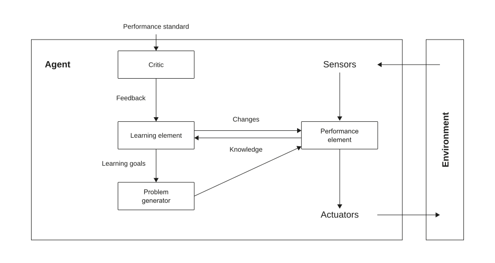
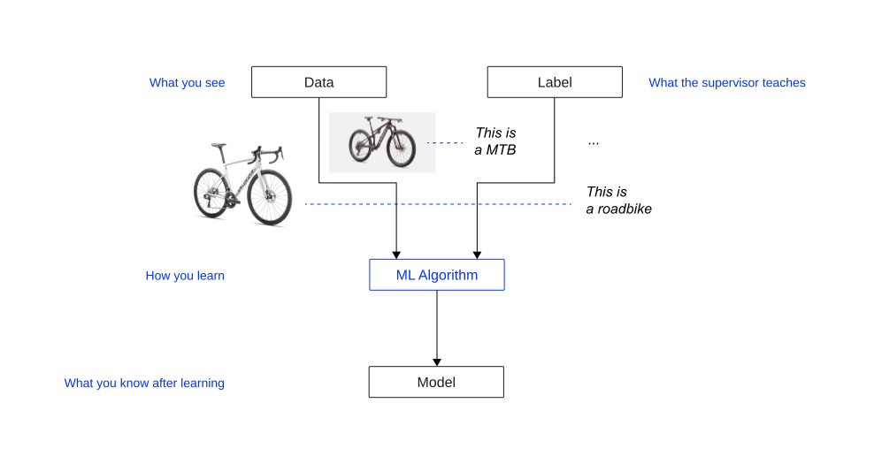
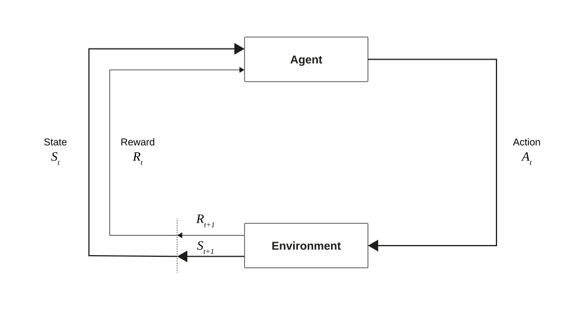
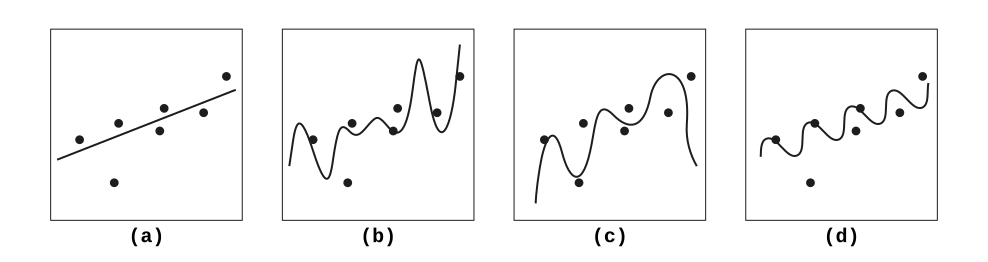

flowchart LR
TD[(Training Data)] --> T[Training]
T --> M[Model]
VD[(Validation Data)] --> V[Validation]
M --> V
V --> |"Hyperparameter Tuning"| T
V --> |"Model Selection"| SM[Selected Model]
TestD[(Test Data)] --> TE[Testing]
SM --> TE
TE --> |"Performance Estimation"| FM[Final Model]
ND[(New Data)] --> AP[Application]
FM --> AP
AP --> PR[Predictions]
style TD fill:#f9f9f9,stroke:#333,stroke-width:1px
style VD fill:#f9f9f9,stroke:#333,stroke-width:1px
style TestD fill:#f9f9f9,stroke:#333,stroke-width:1px
style ND fill:#f9f9f9,stroke:#333,stroke-width:1px
style M fill:#c0f0c0,stroke:#333,stroke-width:1px
style SM fill:#c0f0c0,stroke:#333,stroke-width:1px
style FM fill:#c0f0c0,stroke:#333,stroke-width:1px
style PR fill:#ffe0c0,stroke:#333,stroke-width:1px
Introduction to ML
Introduction to AI (I2AI)
Andy Weeger
Neu-Ulm University of Applied Sciences
May 4, 2026
Agenda
- What is ML? 15 min
- Three learning paradigms 25 min
- The learning process & what can go wrong 25 min
- Ockham’s razor & wrap-up 15 min
What is ML?
Mitchell’s definition
A computer is said to learn from experience E with respect to some task T and some performance measure P, if its performance on T, as measured by P, improves with experience E. Mitchel (1997, p. 2)
- Traditional programming: humans encode rules; the computer follows them
- Machine learning: the computer discovers rules from data (the “experience”)
- T and E are usually tractable to define; P is the hardest to get right
- Goodhart’s Law: once a measure becomes the explicit optimization target, it loses value as a proxy for what we actually care about
Learning agent architecture

- Performance element: processes percepts and selects actions
- Learning element: carries out improvements using feedback from the critic
- Critic: evaluates behavior against an external performance standard
- Problem generator: suggests explorative actions that lead to new experience
Map the Scenario
Consider: Me learning to play tennis.
Tasks
- What is the task T, the experience E, and the performance measure P?
- Who or what acts as the critic and the problem generator?
- What type of feedback is available: supervised, unsupervised, or reinforcement?
10:00
Three learning paradigms
Three paradigms visualized
Supervised
Unsupervised
& Reinforcement
What type of feedback does the agent receive?



Learning paradigm comparison
| Supervised | Unsupervised | Reinforcement | |
|---|---|---|---|
| Feedback | Correct answer per instance | None (structure only) | Reward/punishment signal |
| Goal | Learn input, map output | Discover hidden patterns | Learn optimal policy |
| Examples | Classification, regression | Clustering, dimension reduction | Game play, robotics |
The boundaries are not rigid:
Semi-supervised and self-supervised learning blend elements of multiple paradigms.
- Semi-supervised learning uses a small amount of labeled data together with a large amount of unlabeled data
- Self-supervised learning creates its own supervision signal from unlabeled data by defining a “pretext task” derived from the data’s structure (e.g., masked language modelling; next-token prediction)
Classify & Justify
For each scenario, decide: supervised, unsupervised, or reinforcement learning?
For each, specify T, E, and P.
- A streaming service groups its catalog into clusters of similar movies to improve its recommendation interface.
- A bank builds a model to predict whether a loan applicant will default, trained on 10 years of labeled application outcomes.
- A warehouse robot learns to pick and place objects by trying different grasping strategies and receiving a success/failure signal.
- An email provider trains a filter using a dataset of messages manually labeled “spam” or “not spam.”
- A retailer analyzes purchase histories to discover which products are frequently bought together.
- A self-driving car’s lane-keeping system is trained on thousands of hours of human driving footage with the correct steering angle recorded for each frame.
15:00
Learning
The learning process
Three separate datasets
- Training = dataset to learn a general model
- Validation = dataset for selection and tuning
- Test = dataset to detect problems in a controlled environment
Bias-variance tradeoff

- Underfitting (high bias, low variance): the model is too simple to capture the underlying pattern
- Good fit (balanced): complexity matches the data; the model generalizes
- Overfitting (low bias, high variance): the model memorizes training noise and fails on new data
What Went Wrong?
For each case, diagnose the problem (name it) and propose a fix.
Case 1: A sentiment classifier trained on electronics reviews achieves 99.2% training accuracy. After deployment to restaurant and hotel reviews, accuracy drops to 61%.
Case 2: A student fits a degree-15 polynomial to 20 data points. The curve passes through every training point (training error ≈ 0). With 10 new measurements, predictions are wildly off.
Case 3: A hospital trains a readmission model. Training accuracy: 58%. Validation accuracy: 57%. Adding more training data does not improve performance.
18:00
Ockham’s razor & wrap-up
Ockham’s Razor
In your own words, explain what Ockham’s razor is. Find an example from everyday life or from ML that you can use to enrich your explanation.
08:00
Key takeaways
What is ML?
- ML is improvement through experience; define T, E, and P carefully, especially P
- Goodhart’s Law: once a metric becomes the optimization target, it loses value as a proxy for the goal
Three learning paradigms
- The distinguishing criterion is the feedback type, not the application domain
- Supervised: correct answer per instance. Unsupervised: structure only. Reinforcement: reward signal
Key takeaways #2
The learning process
- Train/validate/test separation protects the evaluation from contamination; the test set is touched exactly once
- Distribution shift between training and deployment is a silent failure mode
Bias, variance, and Ockham’s razor
- High bias: the model is too simple and underfits. High variance: the model is too complex and overfits
- The simplest model that adequately explains the data is preferred (Ockham’s razor)
Q&A
Literature
Mitchel, T. (1997). Machine learning (mcgraw-hill international edit). McGraw-Hill Education. https://books.google.de/books?id=dMp2uwEACAAJ
Russel, S., & Norvig, P. (2022). Artificial intelligence: A modern approach. Pearson Education.